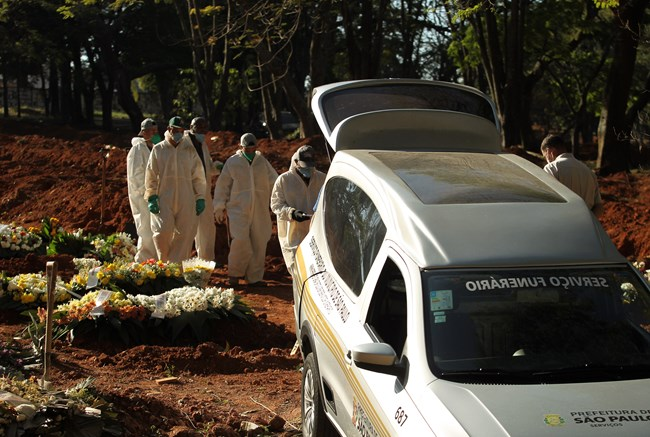
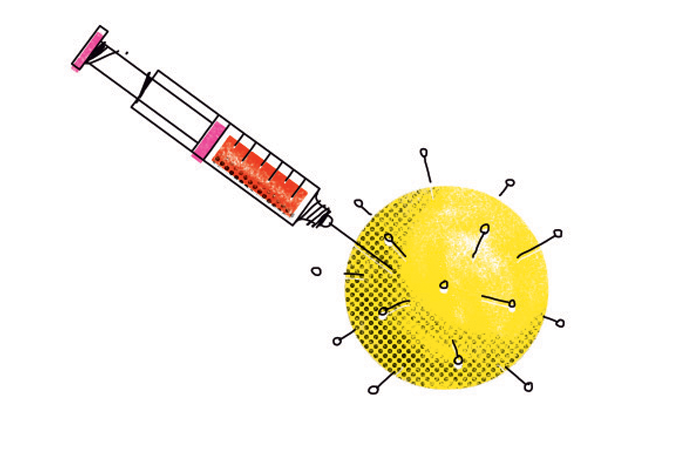

E se o Coronavírus chegar no Brasil?
Brasil confirma primeiro caso da doença

Primeira morte por Coronavirus no Brasil aconteceu em 12 de março
Brasil supera 1 milhão de casos de COVID19
Brasil supera marca de 1 milhão de recuperados

Vacina para Coronavirus: quem vai receber primeiro